파일 업로드 (CSV/Excel)
로컬 저장소에 있는 CSV, Excel, JSON 등의 정형 데이터 파일을 업로드.
📎 학습 자료 및 실습 파일 관리
학습 자료 파일을 다운로드 받으세요
어떤 데이터가 필요할까?
Student_GPA.csv
생활 습관 데이터와 학점
공부시간, 수면시간, 과외활동시간, 사교활동시간, 신체활동시간, 스트레스 수준 ==> GPA(평균학점)
문제를 정의해보자
생활 습관 데이터를 수집해서 GPA(평균학점)을 예측하는GPA예측 회귀모델을 구현해보자.
데이터 가져오기
분석 데이터 문제정의와 가져오기
어떤 데이터가 필요할까?
Student_GPA.csv
데이터 가져오기
.png)
🍄데이터가 한글인경우 업로드시 오류의 원인이 될수 있습니다. 인코딩을 CP494(한글)로 변경!!
🧯 종속변수는?
GPA(평균학점)
기초정보 분석
데이터의 평균, 중앙값, 최빈값, 표준편차 등 핵심 통계 지표를 한눈에 파악합니다.
기초정보 분석
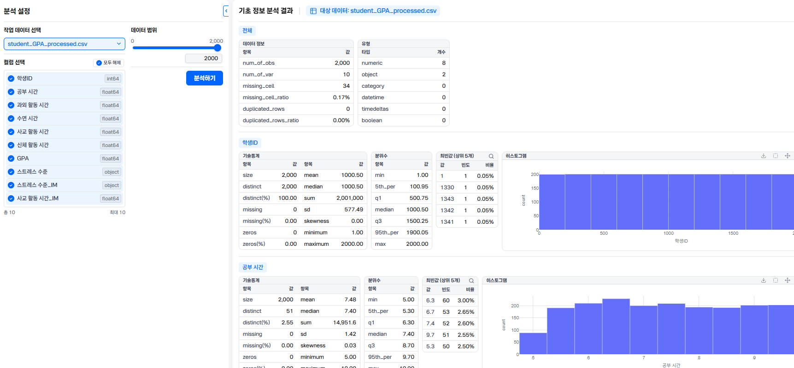
🧯문제
전체 데이터 정보에 대한 설명으로 옳지 않은 것은? 4
- 12000개의 관측치로 구성되어 있다
- 234개의 결측치가 있다
- 3중복되는 관측치는 없다
- 4데이터 유형에서 수치형은 7개이다
- 5데이터 유형에서 범주형은 2개이다
🧯문제
신체활동시간 변수의 평균값(mean)은 얼마인가?
💊힌트
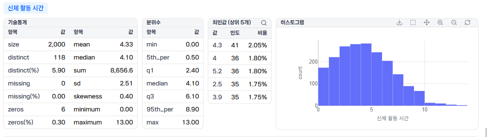
🧯문제
스트레스 수준 변수의 최빈값은?
💊힌트
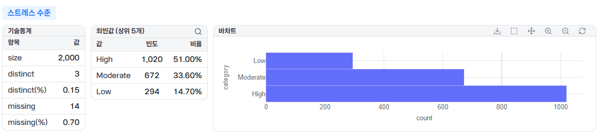
시각화분석
데이터 내 누락된 값(NaN)의 분포와 정상 범위를 벗어난 아웃라이어를 찾아냅니다.
산점도
.png)
🧯문제
산점도에서 공부시간과 GPA 관계를 설명하세요
산점도
.png)
히트맵
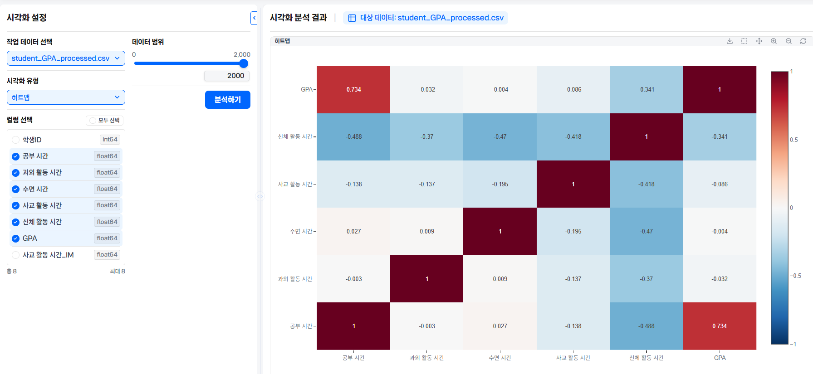
🧯문제
GPA와 음의 상관관계가 가장 높은 있는 변수 이름과 상관관계수는 ?(반올림 하여 소수 둘째 자리 까지)
💊힌트
음수값 중 가장 작은값
🧯문제
GPA와 양의 상관관계가 가장 높은 있는 변수 이름과 상관관계수는 ?(반올림 하여 소수 둘째 자리 까지)
💊힌트
양수값 중 가장 큰값
박스차트
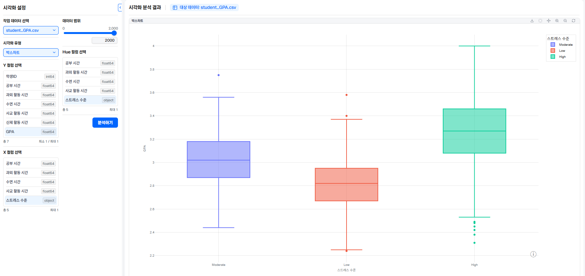
🧯문제
히트맵에서 공부시간과 GPA 관계를 설명하세요
🧯문제
스트레스 시간이 High인 수면시간의 중앙값은?
💊힌트
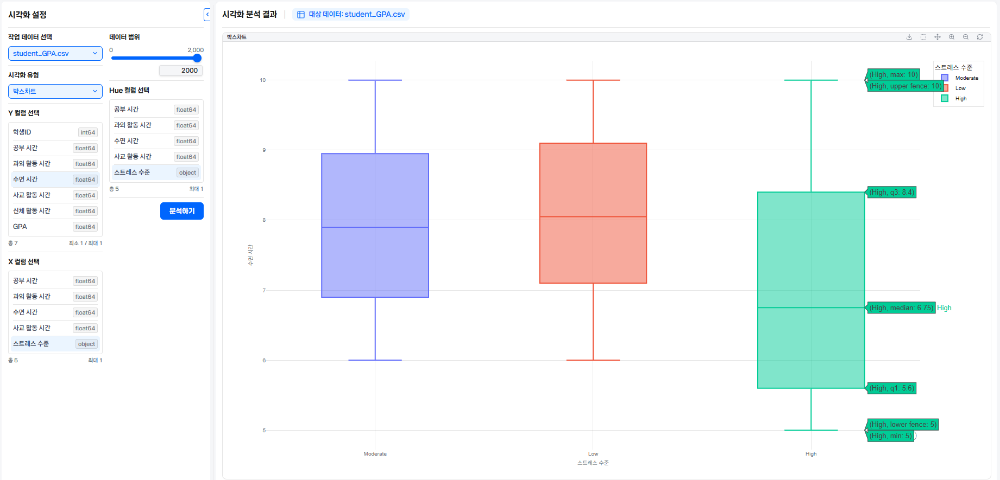
🧯문제
스트레스 시간이 Moderate인 신체활동 시간의 최댓값은?
💊힌트
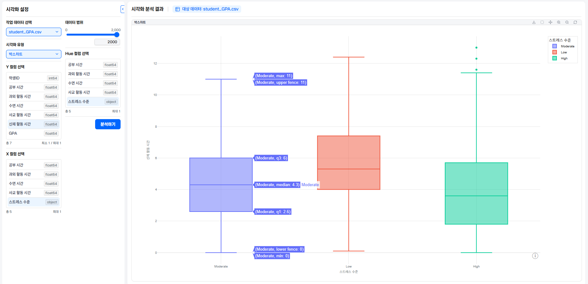
박스차트
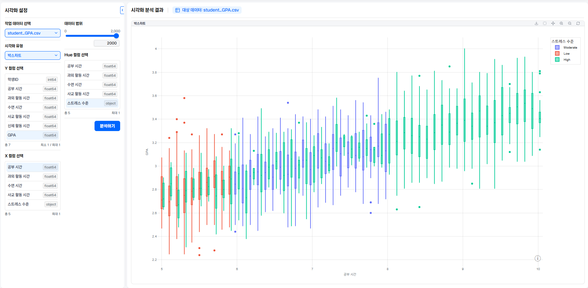
🧯문제
박스차트를 보고 스트레스 수준과 공부시간 GPA 관계를 설명하세요
분포차트
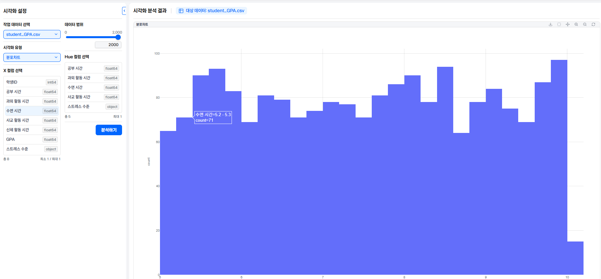
🧯문제
수면시간이 8.0~8.1 구간의 학생수는?
💊힌트
분포차트

🧯문제
분포차트를 보고 수면시간과 스트레스 간의 관계를 설명하세요
🧯문제
스트레스 수준이 낮은 학생 중 사교 시간 활동이 3~3.1 구간의 학생 수는?
💊힌트
데이터 샘플보기
데이터를 확인 할 수 있습니다.
데이터샘플
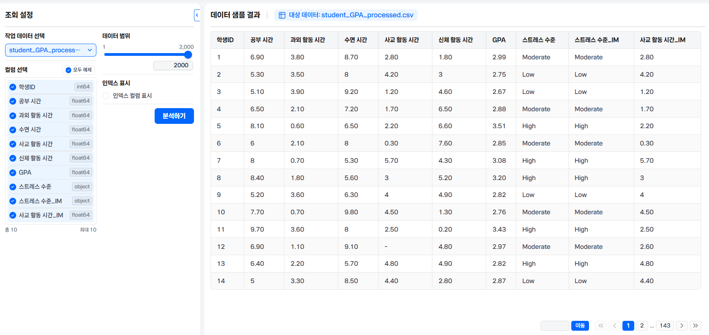
데이터 가공
결측치와 중복 데이터를 처리하고 정돈된 형태로 정제합니다.
데이터 가공(스트레스 수준)
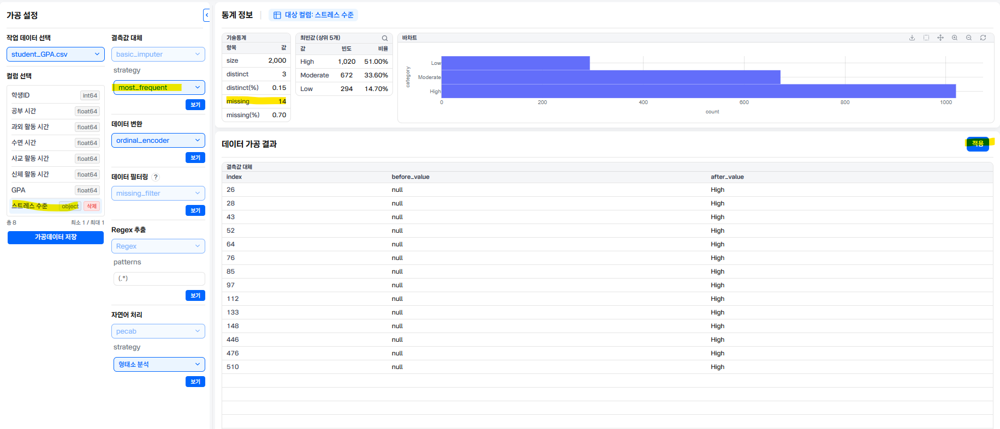
📌 "스트레스 수준"은 object 타입(문자열 또는 범주형 데이터)로 설정되어 있습니다.
범주형 데이터는 평균(mean)이나 중앙값(median) 같은 수치 연산을 수행할 수 없기 때문에,
데이터에서 가장 자주 등장하는 값인 최빈값(most_frequent)을 이용해 결측치를 대체해야 합니다
데이터 가공 (사교 활동과 시간)
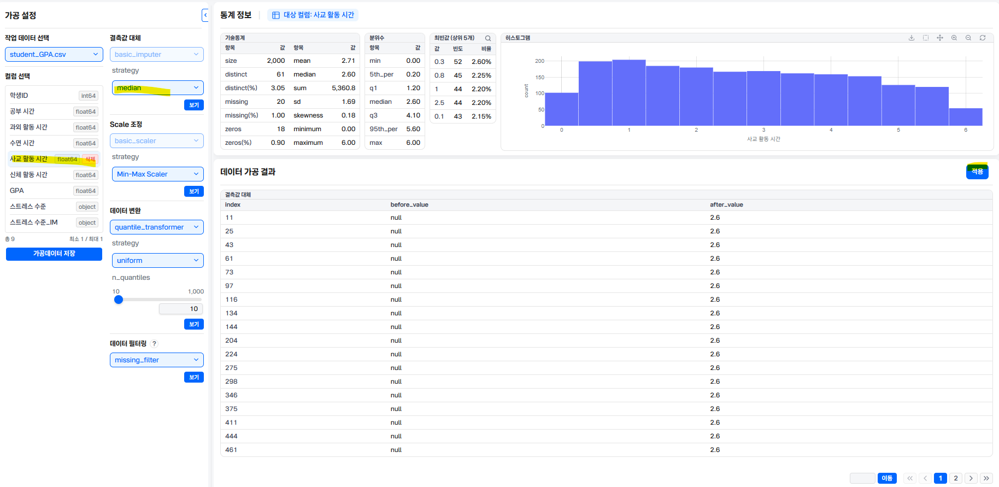
📌 "사교 활동 시간"은 float64 타입의 연속형 수치 데이터입니다.
수치 데이터의 결측치를 채울 때는 평균(mean)이나 중앙값(median)을 주로 사용합니다.
평균을 사용하면 이상치가 발생 할수 있어 데이터가 왜곡될수 있기때문에 중앙값을 사용하는 것이 안정적이다.
데이터 가공 완료


머신러닝 학습
딥러닝 학습
모델의 학습 성능에 영향을 주는 세부 파라미터 값(학습률, 트리 깊이 등)을 지정합니다.
딥러닝 학습
.png)
스트레스 수준은 "object"로 데이터 유형 category, 디코더 선택 sparse로 한다
컴퓨터는 문자나 단어를 직접 이해하지 못하기 때문에, 범주형 데이터를 학습할 때 원-핫 인코딩(One-Hot Encoding)이라는 방식을 거칩니다.
sparse 디코더를 선택하면, 컴퓨터에게 "0이 아닌 중요한 값(1)의 위치만 압축해서 기억하고, 나머지 수많은 0들은 굳이 메모리에 다 차지게 저장하지 마!" 라고 지시하는 것과 같습니다.
학습 속도도 빨라지고 메모리와 성능의 낭비가 적어지는 효율성이 있습니다.
딥러닝 학습
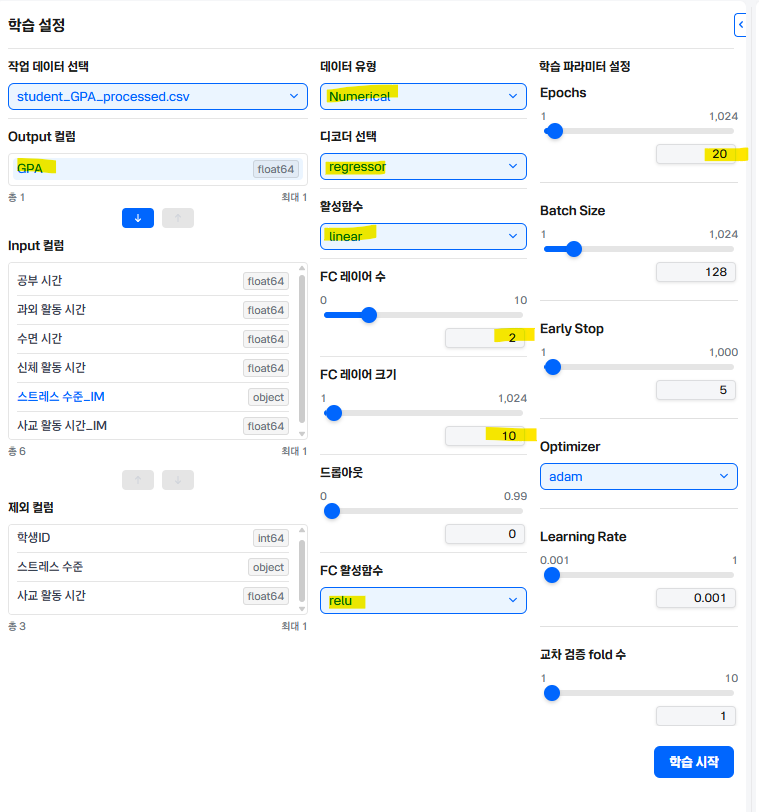
📌 GPA선택하고 "숫자형데이터" 데이터 유형 으로 Numerical 선택한다 이유는? GPA(학점)는 문자나 카테고리가 아니라 실제 크기를 가진 숫자(예: 3.5, 4.0 등)이기 때문에, 컴퓨터에게 이 데이터가 "그냥 글자가 아니라 계산할 수 있는 숫자야"라고 알려주는 설정입니다.
📌 디코더 선택: regressor (회귀 모델) 선택 이유는? 연속된 숫자를 맞추는 일이기 때문에, 예측 모델을 회귀 모델(regressor)로 선택합니다.
📌 활성화 함수 linear(GPA처럼 연속된 숫자 점수를 그대로 정확하게 예측해서 출력해야 하기 때문에, 숫자를 변형 없이 그대로 통과시켜 주는 linear 함수를 사용하는 것 ),
📌 FC 활성화 함수 relu(입력값이 0보다 작으면 0으로 만들어 버리고, 0보다 크면 입력된 값 그대로 통과시키는 아주 단순한 함수로 양수 영역에서는 입력값을 그대로 통과시키기 때문에 기울기가 항상 1로 일정하게 유지)
📌 FC 레이어수 2, FC 레이어 크기 5
📌 Epochs 20, batch size 128, early stop 5
📌 Optimizer adam(학습을 진행할 때 방향과 보폭을 가장 효율적으로 찾아줌) 한다
딥러닝 학습결과

딥러닝 학습 문제
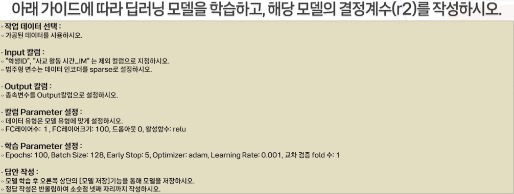
💊힌트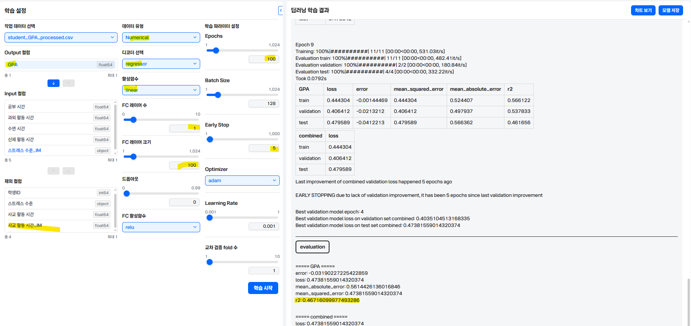
AI 모델 활용
새로운 대량의 데이터셋을 모델에 입력하여 일괄적인 예측 결과 값을 도출합니다.
변수영향도 확인
.png)
🧯문제
GPA를 결정하는데 가장 중요한 요소(변수)는 무엇인가요?
💊힌트
시뮬레이션
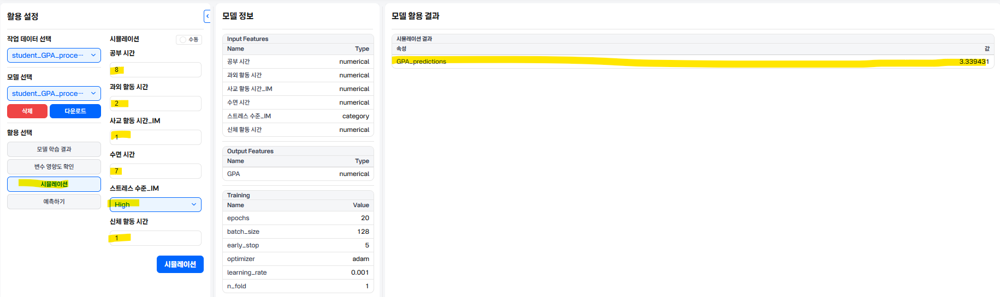
🧯문제
학습한 딥러닝 모델을 활요하여GPA를 예측해보자
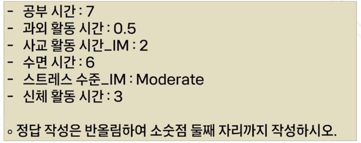
💊힌트
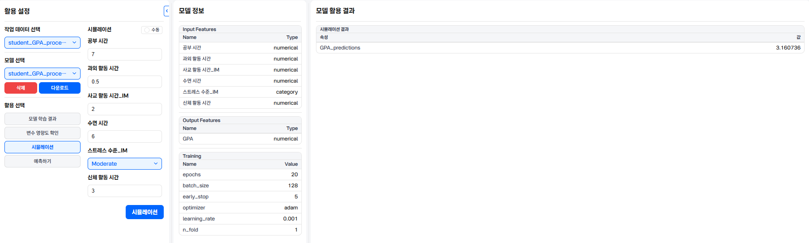